📍 Résidence West Point · Foum El Bouir, Dakhla📍 West Point Residence · Foum El Bouir, Dakhla📍 Residencia West Point · Foum El Bouir, Dakhla📍 Residência West Point · Foum El Bouir, Dakhla📍 Residenza West Point · Foum El Bouir, Dakhla
Foum El Bouircôté AtlantiqueFoum El BouirAtlantic SideFoum El Bouirlado AtlánticoFoum El Bouirlado AtlânticoFoum El Bouirlato Atlantico
Votre guide d'expériences · Dakhla, Sahara Atlantique Your experience guide · Dakhla, Atlantic Sahara Tu guía de experiencias · Dakhla, Sáhara Atlántico O vosso guia de experiências · Dakhla, Saara Atlântico La vostra guida d'esperienze · Dakhla, Sahara Atlantico
Glisse · Désert · GastronomieGliding · Desert · GastronomyDeslizamiento · Desierto · GastronomíaDeslize · Deserto · GastronomiaScivolo · Deserto · Gastronomia
Là où l'Atlantique rencontre le Sahara.Where the Atlantic meets the Sahara.Donde el Atlántico se encuentra con el Sáhara.Onde o Atlântico encontra o Saara.Dove l'Atlantico incontra il Sahara.
Quel est votre profil ? What's your profile? ¿Cuál es tu perfil? Qual é o seu perfil? Qual è il tuo profilo?
Spots · Avis d'expertSpots · Expert insightSpots · Opinión expertaSpots · Opinião de especialistaSpot · Parere dell'esperto
Deux spots,
une seule péninsuleTwo spots,
one peninsulaDos spots,
una sola penínsulaDois spots,
uma só penínsulaDue spot,
un'unica penisola
Foum El Bouir et la Lagune ne s'opposent pas — ils se complètent. L'un ouvre sur l'Atlantique sauvage, l'autre sur un plan d'eau protégé. Deux ambiances, deux pratiques, une seule destination.Foum El Bouir and the Lagoon don't compete — they complement each other. One opens to the wild Atlantic, the other to sheltered waters. Two moods, two disciplines, one destination.Foum El Bouir y la Laguna no se oponen — se complementan. Uno abre al Atlántico salvaje, el otro a aguas protegidas. Dos ambientes, dos prácticas, un solo destino.Foum El Bouir e a Lagoa não se opõem — complementam-se. Um abre para o Atlântico selvagem, o outro para águas protegidas. Dois ambientes, duas práticas, um único destino.Foum El Bouir e la Laguna non si oppongono — si completano. Uno si apre sull'Atlantico selvaggio, l'altro su acque riparate. Due atmosfere, due pratiche, un'unica destinazione.
Le conseil de la résidenceThe residence's insider tipEl consejo de la residenciaO conselho da residênciaIl consiglio della residenza
"Commencez par Foum El Bouir pour ressentir l'Atlantique brut. Partez à la lagune pour glisser. Revenez ici pour le coucher de soleil. C'est ainsi que Dakhla se vit vraiment.""Start at Foum El Bouir to feel the raw Atlantic. Head to the lagoon to glide. Return here for the sunset. That's the true way to live Dakhla.""Empieza en Foum El Bouir para sentir el Atlántico en bruto. Ve a la laguna a deslizarte. Regresa aquí para el atardecer. Así se vive Dakhla de verdad.""Comece em Foum El Bouir para sentir o Atlântico bruto. Vá à lagoa deslizar. Regresse aqui para o pôr do sol. É assim que Dakhla se vive de verdade.""Inizia a Foum El Bouir per sentire l'Atlantico grezzo. Vai alla laguna per scivolare. Torna qui per il tramonto. È così che si vive davvero Dakhla."
Droite mythique de l'Atlantique. Vagues puissantes, vent off-shore, barrels hivernaux. Surf, bodyboard, wing en vagues — l'authentique Dakhla.The mythical Atlantic right-hander. Powerful waves, offshore wind, winter barrels. Surf, bodyboard, wing in waves — the authentic Dakhla.La derecha mítica del Atlántico. Olas potentes, viento offshore, barrels invernales. Surf, bodyboard, wing en olas — la auténtica Dakhla.A direita mítica do Atlântico. Ondas poderosas, vento offshore, barrels de inverno. Surf, bodyboard, wing em ondas — a autêntica Dakhla.Il mitico diritto dell'Atlantico. Onde potenti, vento offshore, barrel invernali. Surf, bodyboard, wing nelle onde — la vera Dakhla.
Plan d'eau protégé, vent constant 300 jours/an. Kitesurf, wingfoil, SUP — le paradis des glisseurs. Dune Blanche, Île du Dragon à portée.Sheltered water, constant wind 300 days a year. Kitesurf, wingfoil, SUP — a glider's paradise. White Dune, Dragon Island within reach.Agua protegida, viento constante 300 días al año. Kitesurf, wingfoil, SUP — el paraíso de los deslizadores. Duna Blanca, Isla del Dragón al alcance.Água protegida, vento constante 300 dias por ano. Kitesurf, wingfoil, SUP — o paraíso dos deslizadores. Duna Branca, Ilha do Dragão ao alcance.Acqua riparata, vento costante 300 giorni l'anno. Kitesurf, wingfoil, SUP — il paradiso degli scivolatori. Duna Bianca, Isola del Drago a portata.
Expériences · Péninsule de DakhlaExperiences · Peninsula of DakhlaExperiencias · Península de DakhlaExperiências · Península de DakhlaEsperienze · Penisola di Dakhla
Vivre DakhlaLiving DakhlaVivir DakhlaViver DakhlaVivere Dakhla
De l'Atlantique sauvage aux dunes du Sahara — chaque journée est une expérience différente.From the wild Atlantic to the Saharan dunes — every day is a different experience.Del Atlántico salvaje a las dunas del Sáhara — cada día es una experiencia diferente.Do Atlântico selvagem às dunas do Saara — cada dia é uma experiência diferente.Dall'Atlantico selvaggio alle dune del Sahara — ogni giorno è un'esperienza diversa.

🌊 Mer🌊 Sea🌊 Mar🌊 Mar🌊 Mare
Surf · Foum El BouirSurf · Foum El BouirSurf · Foum El BouirSurf · Foum El BouirSurf · Foum El Bouir
La droite qui a mis Dakhla sur la carte du monde. The right-hander that put Dakhla on the world map. La derecha que puso Dakhla en el mapa del mundo. A direita que colocou Dakhla no mapa do mundo. Il diritto che ha messo Dakhla sulla mappa del mondo.
La droite mythique de l'Atlantique. Point break atlantique technique, riders confirmés. Barrels hivernaux de classe mondiale.The mythical Atlantic right-hander. Technical Atlantic point break, experienced riders. World-class winter barrels.La derecha mítica del Atlántico. Point break atlántico técnico, riders confirmados. Barrels invernales de clase mundial.A direita mítica do Atlântico. Point break atlântico técnico, riders experientes. Barrels de inverno de classe mundial.Il mitico diritto dell'Atlantico. Point break atlantico tecnico, rider confermati. Barrel invernali di classe mondiale.
✓ Surfeur · Aventurier✓ Surfer · Adventurer✓ Surfista · Aventurero✓ Surfista · Aventureiro✓ Surfista · Avventuriero

🌊 Mer🌊 Sea🌊 Mar🌊 Mar🌊 Mare
Kitesurf · La LaguneKitesurf · The LagoonKitesurf · La LagunaKitesurf · A LagoaKitesurf · La Laguna
300 jours de vent. Zéro excuse pour ne pas voler. 300 days of wind. Zero excuses not to fly. 300 días de viento. Cero excusas para no volar. 300 dias de vento. Zero desculpas para não voar. 300 giorni di vento. Zero scuse per non volare.
300 jours de vent par an. Le spot kite référence mondial, PK 25.300 days of wind a year. The world's benchmark kite spot, PK 25.300 días de viento al año. El spot kite de referencia mundial, PK 25.300 dias de vento por ano. O spot kite de referência mundial, PK 25.300 giorni di vento l'anno. Lo spot kite di riferimento mondiale, PK 25.
✓ Kiteur · Famille✓ Kiter · Family✓ Kitero · Familia✓ Kitesurfista · Família✓ Kitesurfista · Famiglia
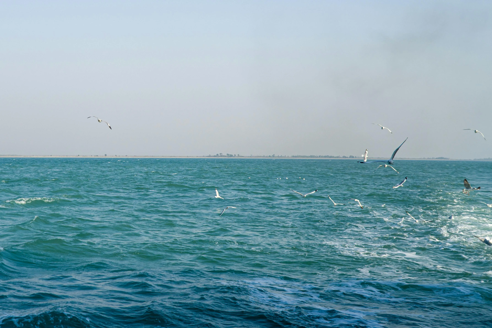
🌊 Mer🌊 Sea🌊 Mar🌊 Mar🌊 Mare
Kayak de merSea kayakKayak de marKayak de marKayak di mare
La côte atlantique vue de l'eau — autrement. The Atlantic coast seen from the water — differently. La costa atlántica vista desde el agua — de otra forma. A costa atlântica vista da água — de outra forma. La costa atlantica vista dall'acqua — diversamente.
Exploration de la côte atlantique depuis Foum El Bouir. Faune marine exceptionnelle.Exploring the Atlantic coast from Foum El Bouir. Exceptional marine wildlife.Exploración de la costa atlántica desde Foum El Bouir. Fauna marina excepcional.Exploração da costa atlântica desde Foum El Bouir. Fauna marinha excecional.Esplorazione della costa atlantica da Foum El Bouir. Fauna marina eccezionale.
✓ Couple · Nature✓ Couple · Nature✓ Pareja · Naturaleza✓ Casal · Natureza✓ Coppia · Natura

🌊 Mer🌊 Sea🌊 Mar🌊 Mar🌊 Mare
Île du DragonDragon IslandIsla del DragónIlha do DragãoIsola del Drago
Là où la lagune rencontre le rose des flamants. Where the lagoon meets the pink of the flamingos. Donde la laguna se encuentra con el rosa de los flamencos. Onde a lagoa encontra o rosa dos flamingos. Dove la laguna incontra il rosa dei fenicotteri.
Spot iconique de la lagune, accessible en bateau. Eaux turquoise, flamants roses.Iconic lagoon spot, accessible by boat. Turquoise waters, pink flamingos.Spot icónico de la laguna, accesible en barco. Aguas turquesas, flamencos rosas.Spot icónico da lagoa, acessível de barco. Águas turquesa, flamingos cor-de-rosa.Spot iconico della laguna, accessibile in barca. Acque turchesi, fenicotteri rosa.
✓ Tous profils✓ All profiles✓ Todos los perfiles✓ Todos os perfis✓ Tutti i profili
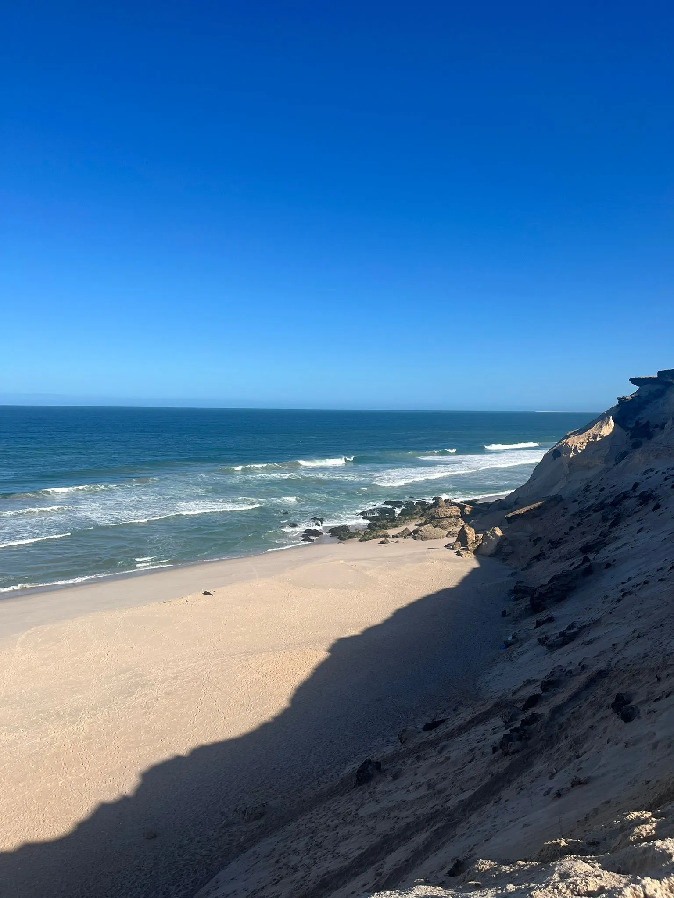
🌊 Mer🌊 Sea🌊 Mar🌊 Mar🌊 Mare
Plage Porto RicoPorto Rico BeachPlaya Porto RicoPraia Porto RicoSpiaggia Porto Rico
La plage sauvage que peu de voyageurs connaissent. The wild beach that few travellers know. La playa salvaje que pocos viajeros conocen. A praia selvagem que poucos viajantes conhecem. La spiaggia selvaggia che pochi viaggiatori conoscono.
Plage sauvage, préservée. Baignade, farniente, couchers de soleil spectaculaires.Wild, untouched beach. Swimming, lazy days, spectacular sunsets.Playa salvaje y preservada. Baño, dolce far niente, atardeceres espectaculares.Praia selvagem e preservada. Banho, dolce far niente, pôres do sol espetaculares.Spiaggia selvaggia e preservata. Nuoto, dolce far niente, tramonti spettacolari.
✓ Couple · Famille✓ Couple · Family✓ Pareja · Familia✓ Casal · Família✓ Coppia · Famiglia

🌊 Mer🌊 Sea🌊 Mar🌊 Mar🌊 Mare
Pêche traditionnelleTraditional fishingPesca tradicionalPesca tradicionalPesca tradizionale
À l'aube avec les pêcheurs — le Dakhla authentique. At dawn with the fishermen — the authentic Dakhla. Al amanecer con los pescadores — el Dakhla auténtico. Ao amanhecer com os pescadores — o Dakhla autêntico. All'alba con i pescatori — la vera Dakhla.
Sortie à l'aube avec les pêcheurs locaux. Expérience authentique, poisson du jour.Dawn outing with local fishermen. Authentic experience, catch of the day.Salida al amanecer con los pescadores locales. Experiencia auténtica, pescado del día.Saída ao amanhecer com os pescadores locais. Experiência autêntica, peixe do dia.Uscita all'alba con i pescatori locali. Esperienza autentica, pesce del giorno.
✓ Aventurier · Culture✓ Adventurer · Culture✓ Aventurero · Cultura✓ Aventureiro · Cultura✓ Avventuriero · Cultura

🏜 Désert🏜 Desert🏜 Desierto🏜 Deserto🏜 Deserto
Quad · DunesQuad · DunesQuad · DunasQuad · DunasQuad · Dune
Adrénaline entre sable et océan au coucher du soleil. Adrenaline between sand and ocean at sunset. Adrenalina entre arena y océano al atardecer. Adrenalina entre areia e oceano ao pôr do sol. Adrenalina tra sabbia e oceano al tramonto.
Adrénaline entre dunes et côte. Excursion guidée, coucher de soleil sur les crêtes.Adrenaline between dunes and coast. Guided excursion, sunset over the ridgelines.Adrenalina entre dunas y costa. Excursión guiada, atardecer sobre las crestas.Adrenalina entre dunas e costa. Excursão guiada, pôr do sol sobre as cristas.Adrenalina tra dune e costa. Escursione guidata, tramonto sulle creste.
✓ Aventurier · Couple✓ Adventurer · Couple✓ Aventurero · Pareja✓ Aventureiro · Casal✓ Avventuriero · Coppia
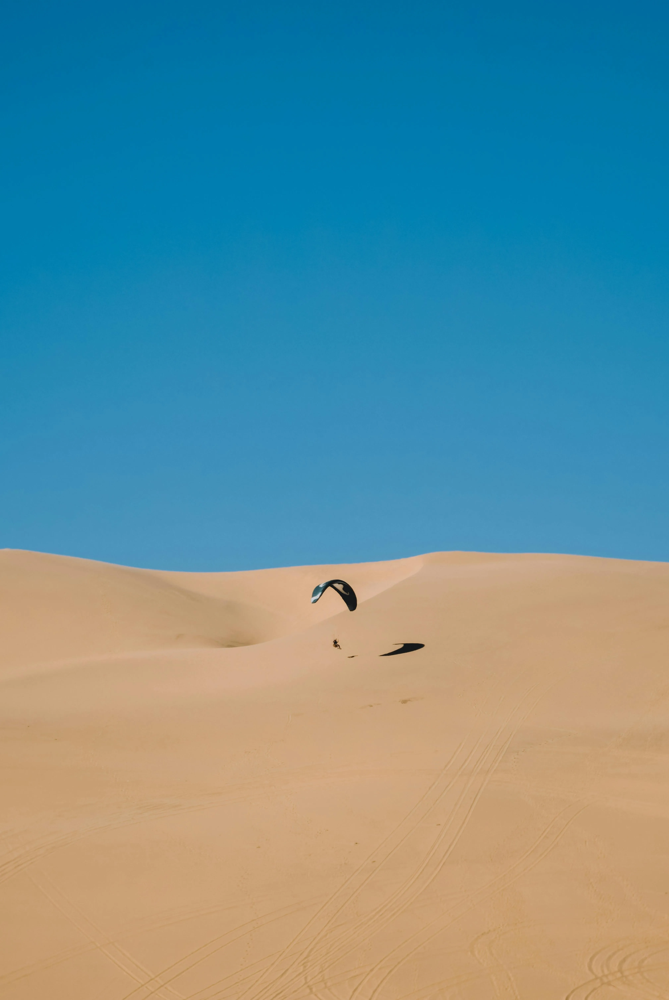
🏜 Désert🏜 Desert🏜 Desierto🏜 Deserto🏜 Deserto
La Dune BlancheThe White DuneLa Duna BlancaA Duna BrancaLa Duna Bianca
Le point de vue le plus spectaculaire de la péninsule. The most spectacular viewpoint on the peninsula. El mirador más espectacular de la península. O mirante mais espetacular da península. Il punto panoramico più spettacolare della penisola.
Vue panoramique sur la lagune et l'Atlantique. Incontournable — à faire au lever du soleil.Panoramic view over the lagoon and the Atlantic. A must — best at sunrise.Vista panorámica sobre la laguna y el Atlántico. Imprescindible — a hacer al amanecer.Vista panorâmica sobre a lagoa e o Atlântico. Imperdível — melhor ao nascer do sol.Vista panoramica sulla laguna e sull'Atlantico. Da non perdere — meglio all'alba.
✓ Tous profils✓ All profiles✓ Todos los perfiles✓ Todos os perfis✓ Tutti i profili
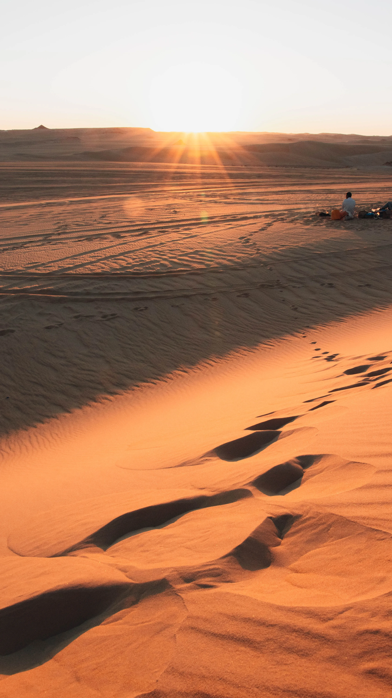
🏜 Désert🏜 Desert🏜 Desierto🏜 Deserto🏜 Deserto
Bivouac · Excursion désertBivouac · Desert excursionBivouac · Excursión desiertoBivaque · Excursão no desertoBivacco · Escursione nel deserto
Une nuit sous les étoiles sahariennes — inoubliable. A night under the Saharan stars — unforgettable. Una noche bajo las estrellas saharianas — inolvidable. Uma noite sob as estrelas saharianas — inesquecível. Una notte sotto le stelle sahariane — indimenticabile.
4x4, nuit sous les étoiles, thé sahraoui au feu de camp. La vraie Mauritanie à portée.4×4, night under the stars, Sahrawi tea by the campfire. The real Mauritania within reach.4×4, noche bajo las estrellas, té saharaui junto al fuego. La verdadera Mauritania al alcance.4×4, noite sob as estrelas, chá saharawi à beira do fogo. A verdadeira Mauritânia ao alcance.4×4, notte sotto le stelle, tè saharawi al fuoco. La vera Mauritania a portata di mano.
✓ Aventurier · Couple✓ Adventurer · Couple✓ Aventurero · Pareja✓ Aventureiro · Casal✓ Avventuriero · Coppia
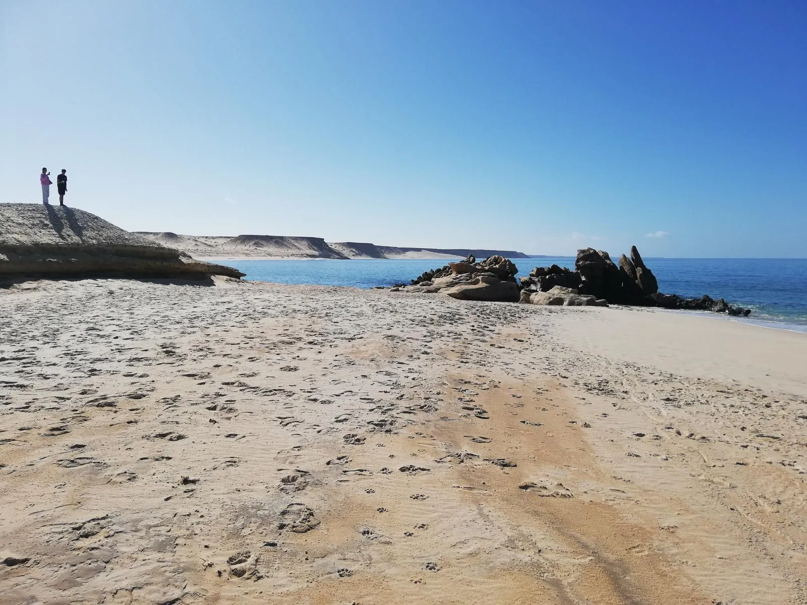
🌿 Nature🌿 Nature🌿 Nature🌿 Nature🌿 Nature
Équitation bord de merHorse riding by the seaEquitación a orillas del marEquitação à beira-marEquitazione in riva al mare
Galoper face aux vagues — une image pour la vie. Galloping facing the waves — a memory for life. Galopar frente a las olas — una imagen para toda la vida. Galopar de frente para as ondas — uma imagem para a vida. Galoppare di fronte alle onde — un'immagine per tutta la vita.
Galoper sur la plage de Foum El Bouir face aux vagues. Rare, photogénique, inoubliable.Galloping along Foum El Bouir beach facing the waves. Rare, photogenic, unforgettable.Galopar por la playa de Foum El Bouir frente a las olas. Raro, fotogénico, inolvidable.Galopar na praia de Foum El Bouir face às ondas. Raro, fotogénico, inesquecível.Galoppare sulla spiaggia di Foum El Bouir di fronte alle onde. Raro, fotogenico, indimenticabile.
✓ Couple · Famille✓ Couple · Family✓ Pareja · Familia✓ Casal · Família✓ Coppia · Famiglia

🌿 Nature🌿 Nature🌿 Nature🌿 Nature🌿 Nature
Yoga · Lever du soleilYoga · SunriseYoga · AmanecerYoga · Nascer do solYoga · Alba
L'Atlantique comme tapis de yoga. The Atlantic as your yoga mat. El Atlántico como esterilla de yoga. O Atlântico como tapete de yoga. L'Atlantico come tappetino da yoga.
Sur la plage de Foum El Bouir, face à l'Atlantique. Sessions sur réservation.On Foum El Bouir beach, facing the Atlantic. Sessions on booking.En la playa de Foum El Bouir, frente al Atlántico. Sesiones bajo reserva.Na praia de Foum El Bouir, face ao Atlântico. Sessões mediante reserva.Sulla spiaggia di Foum El Bouir, di fronte all'Atlantico. Sessioni su prenotazione.
✓ Couple · Bien-être✓ Couple · Wellness✓ Pareja · Bienestar✓ Casal · Bem-estar✓ Coppia · Benessere
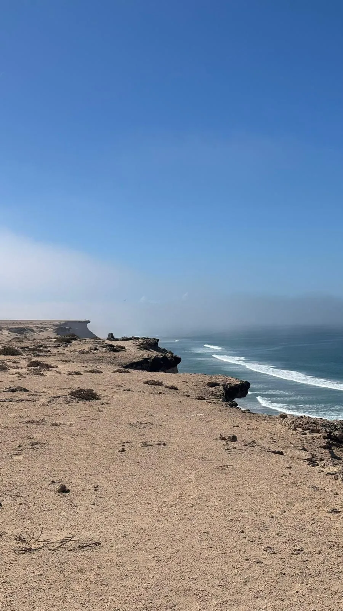
🌿 Nature🌿 Nature🌿 Nature🌿 Nature🌿 Nature
Source AsmaSource AsmaFuente AsmaNascente AsmaSorgente Asma
Un secret bien gardé au cœur de la péninsule. A well-kept secret in the heart of the peninsula. Un secreto bien guardado en el corazón de la península. Um segredo bem guardado no coração da península. Un segreto ben custodito nel cuore della penisola.
Off the beaten track. Source naturelle cachée dans la péninsule, lieu de sérénité absolue.Off the beaten track. A natural spring hidden in the peninsula, a place of absolute serenity.Off the beaten track. Fuente natural escondida en la península, lugar de serenidad absoluta.Fora dos circuitos turísticos. Nascente natural escondida na península, lugar de serenidade absoluta.Fuori dai sentieri battuti. Sorgente naturale nascosta nella penisola, luogo di serenità assoluta.
✓ Aventurier · Couple✓ Adventurer · Couple✓ Aventurero · Pareja✓ Aventureiro · Casal✓ Avventuriero · Coppia
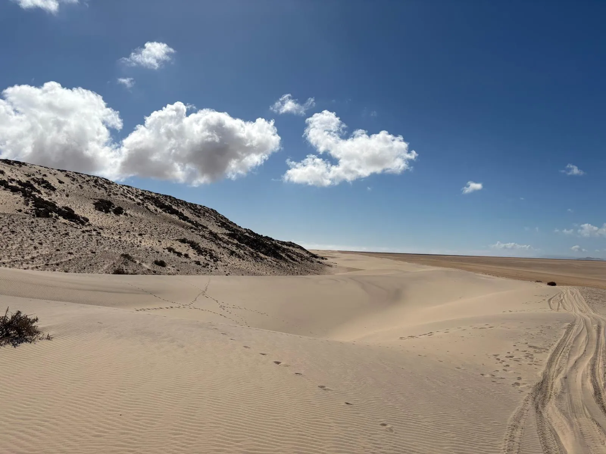
🌿 Nature🌿 Nature🌿 Nature🌿 Nature🌿 Nature
Flamants roses · LagunePink flamingos · LagoonFlamencos rosas · LagunaFlamingos · LagoaFenicotteri rosa · Laguna
Le rose des flamants sur le bleu de la lagune. The pink of the flamingos against the blue of the lagoon. El rosa de los flamencos sobre el azul de la laguna. O rosa dos flamingos sobre o azul da lagoa. Il rosa dei fenicotteri sul blu della laguna.
Colonie permanente sur la lagune. Observation au lever du soleil depuis la rive.Permanent colony on the lagoon. Sunrise watching from the bank.Colonia permanente en la laguna. Observación al amanecer desde la orilla.Colónia permanente na lagoa. Observação ao nascer do sol desde a margem.Colonia permanente sulla laguna. Osservazione all'alba dalla riva.
✓ Famille · Nature✓ Family · Nature✓ Familia · Naturaleza✓ Família · Natureza✓ Famiglia · Natura

🌿 Nature🌿 Nature🌿 Nature🌿 Nature🌿 Nature
Parapente · DunesParagliding · DunesParapente · DunasParapente · DunasParapendio · Dune
Dakhla vue du ciel — 360° de pur vertige. Dakhla from above — 360° of pure vertigo. Dakhla vista desde el cielo — 360° de puro vértigo. Dakhla vista do céu — 360° de pura vertigem. Dakhla vista dal cielo — 360° di pura vertigine.
Décollage des dunes face à l'océan. Vue à 360° sur la péninsule — unique au monde.Takeoff from the dunes facing the ocean. 360° view over the peninsula — unique in the world.Despegue desde las dunas frente al océano. Vista 360° sobre la península — única en el mundo.Descolagem das dunas face ao oceano. Vista a 360° sobre a península — única no mundo.Decollo dalle dune di fronte all'oceano. Vista a 360° sulla penisola — unica al mondo.
✓ Aventurier · Sensations✓ Adventurer · Thrills✓ Aventurero · Sensaciones✓ Aventureiro · Sensações✓ Avventuriero · Emozioni

🌿 Nature🌿 Nature🌿 Naturaleza🌿 Natureza🌿 Natura
Observation des étoilesStargazingObservación de estrellasObservação de estrelasOsservazione delle stelle
Le ciel saharien, votre planétarium privé. The Saharan sky, your private planetarium. El cielo sahariano, su planetario privado. O céu sahariano, o seu planetário privado. Il cielo sahariano, il vostro planetario privato.
Nuit sans pollution lumineuse sur la péninsule. Voie lactée à l'œil nu, silence absolu du désert.A night with no light pollution on the peninsula. Milky Way with the naked eye, absolute desert silence.Noche sin contaminación lumínica en la península. Vía Láctea a simple vista, silencio absoluto del desierto.Noite sem poluição luminosa na península. Via Láctea a olho nu, silêncio absoluto do deserto.Notte senza inquinamento luminoso sulla penisola. Via Lattea a occhio nudo, silenzio assoluto del deserto.
✓ Couple · Aventurier✓ Couple · Adventurer✓ Pareja · Aventurero✓ Casal · Aventureiro✓ Coppia · Avventuriero

🏺 Culture🏺 Culture🏺 Culture🏺 Culture🏺 Culture
Cérémonie du thé sahraouiSahrawi tea ceremonyCeremonia del té saharauiCerimónia do chá saharawiCerimonia del tè saharawi
Trois verres, une tradition millénaire, une rencontre vraie. Three glasses, a thousand-year-old tradition, a genuine encounter. Tres vasos, una tradición milenaria, un encuentro verdadero. Três copos, uma tradição milenar, um encontro verdadeiro. Tre bicchieri, una tradizione millenaria, un incontro autentico.
Chez l'habitant, trois verres rituels. L'hospitalité saharienne dans toute son authenticité.At a local home, three ritual glasses. Saharan hospitality in all its authenticity.En casa de un habitante, tres vasos rituales. La hospitalidad sahariana en toda su autenticidad.Em casa de um habitante, três copos rituais. A hospitalidade sahariana em toda a sua autenticidade.A casa di un locale, tre bicchieri rituali. L'ospitalità sahariana in tutta la sua autenticità.
✓ Tous profils✓ All profiles✓ Todos los perfiles✓ Todos os perfis✓ Tutti i profili
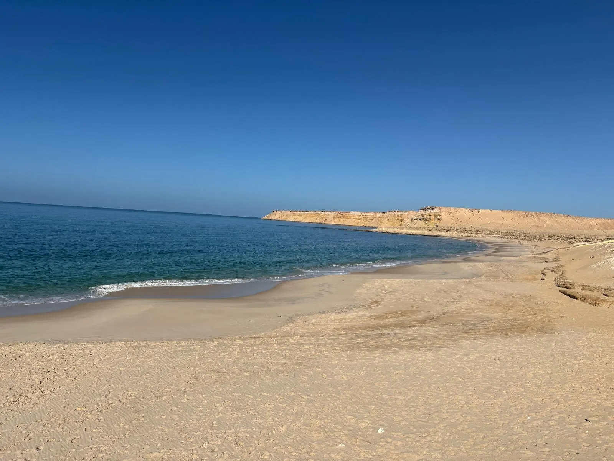
🏺 Culture🏺 Culture🏺 Culture🏺 Culture🏺 Culture
Marché artisanal · DakhlaArtisan market · DakhlaMercado artesanal · DakhlaMercado artesanal · DakhlaMercato artigianale · Dakhla
L'âme de Dakhla en une heure de visite. The soul of Dakhla in one hour of exploration. El alma de Dakhla en una hora de visita. A alma de Dakhla em uma hora de visita. L'anima di Dakhla in un'ora di visita.
Tissages, bijoux, épices sahraouies. Le cœur de la culture locale, à 15 min de la résidence.Weavings, jewellery, Sahrawi spices. The heart of local culture, 15 min from the residence.Tejidos, joyas, especias sahrauis. El corazón de la cultura local, a 15 min de la residencia.Tecidos, joias, especiarias sahrauis. O coração da cultura local, a 15 min da residência.Tessuti, gioielli, spezie saharawi. Il cuore della cultura locale, a 15 min dalla residenza.
✓ Famille · Culture✓ Family · Culture✓ Familia · Cultura✓ Família · Cultura✓ Famiglia · Cultura
-
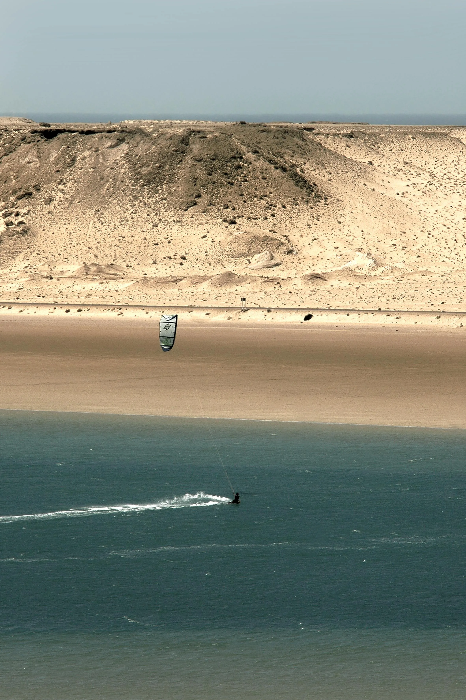
SurfFreestyle Academy Dakhla
Des vagues atlantiques comme première leçon.Atlantic waves as your first lesson.Olas atlánticas como primera lección.Ondas atlânticas como primeira lição.Le onde atlantiche come prima lezione.
📍 Km 12, Plage Foum El Bouir📍 Km 12, Foum El Bouir Beach📍 Km 12, Playa Foum El Bouir📍 Km 12, Praia Foum El Bouir📍 Km 12, Spiaggia Foum El Bouir
L'école locale de référence, directement sur le spot. Surf, wing et kite face aux vagues de l'Atlantique.The local benchmark school, right on the spot. Surf, wing and kite facing the Atlantic waves.La escuela local de referencia, directamente en el spot. Surf, wing y kite frente a las olas del Atlántico.A escola local de referência, diretamente no spot. Surf, wing e kite face às ondas do Atlântico.La scuola locale di riferimento, direttamente sullo spot. Surf, wing e kite di fronte alle onde atlantiche.
-
 Multi
MultiOcean Academy — La Tour d'Éole
Le niveau pro, accessible dès le premier jour.Pro level, accessible from day one.Nivel pro, accesible desde el primer día.Nível pro, acessível desde o primeiro dia.Livello pro, accessibile dal primo giorno.
📍 PK 28, Lagune📍 PK 28, Lagoon📍 PK 28, Laguna📍 PK 28, Lagoa📍 PK 28, Laguna
Co-fondée avec Bruna Kajiya, triple championne du monde. Multispot, niveau pro, excursions Foum El Bouir.Co-founded with Bruna Kajiya, three-time world champion. Multispot, pro level, Foum El Bouir excursions.Co-fundada con Bruna Kajiya, tricampeona del mundo. Multispot, nivel pro, excursiones Foum El Bouir.Co-fundada com Bruna Kajiya, tricampeã mundial. Multispot, nível pro, excursões Foum El Bouir.Co-fondata con Bruna Kajiya, tre volte campionessa del mondo. Multispot, livello pro, escursioni Foum El Bouir.
-
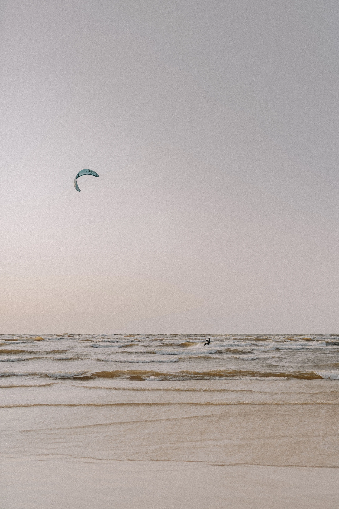
KiteDakhla Attitude Kite School
Glisse le jour, fête le soir.Ride by day, celebrate by night.Deslízate de día, celebra de noche.Deslize de dia, celebre à noite.Scivola di giorno, festeggia di sera.
📍 Av. al Moukawama, Dakhla📍 Av. al Moukawama, Dakhla📍 Av. al Moukawama, Dakhla📍 Av. al Moukawama, Dakhla📍 Av. al Moukawama, Dakhla
Beach Bar, sessions DJ, accès direct lagune. Ambiance surf décontractée, idéal voyageurs solo.Beach Bar, DJ sessions, direct lagoon access. Laid-back surf vibe, ideal for solo travellers.Beach Bar, sesiones DJ, acceso directo laguna. Ambiente surf relajado, ideal para viajeros solos.Beach Bar, sessões DJ, acesso direto à lagoa. Ambiente surf descontraído, ideal para viajantes solo.Beach Bar, sessioni DJ, accesso diretto alla laguna. Atmosfera surf rilassata, ideale per viaggiatori solo.
-
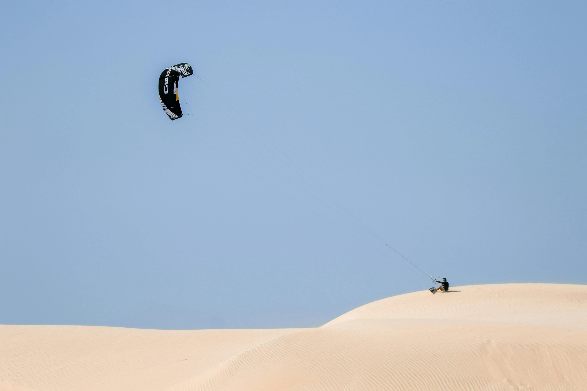
KiteFennekite Dakhla
L'école qui transforme les débutants en riders.The school that turns beginners into riders.La escuela que transforma a los principiantes en riders.A escola que transforma iniciantes em riders.La scuola che trasforma i principianti in rider.
📍 Quartier Moulay Rachid📍 Quartier Moulay Rachid📍 Quartier Moulay Rachid📍 Quartier Moulay Rachid📍 Quartier Moulay Rachid
Petits groupes, moniteurs certifiés. Suivi personnalisé — idéal débutants absolus.Small groups, certified instructors. Personalised follow-up — ideal for complete beginners.Grupos pequeños, monitores certificados. Seguimiento personalizado — ideal para principiantes absolutos.Grupos pequenos, monitores certificados. Acompanhamento personalizado — ideal para iniciantes absolutos.Piccoli gruppi, istruttori certificati. Seguimento personalizzato — ideale per principianti assoluti.
-
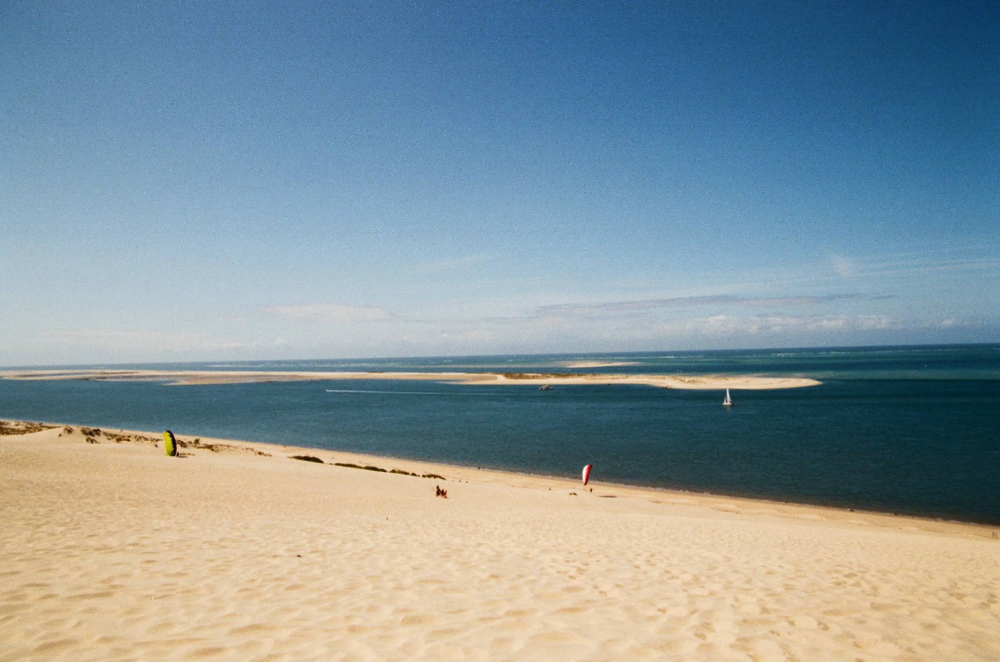
MultiTerres Nomades — Dakhla Surf
Bien plus qu'une école — une aventure complète.Far more than a school — a complete adventure.Mucho más que una escuela — una aventura completa.Muito mais que uma escola — uma aventura completa.Ben più di una scuola — un'avventura completa.
📍 Péninsule de Dakhla📍 Dakhla Peninsula📍 Península de Dakhla📍 Península de Dakhla📍 Penisola di Dakhla
Séjours multisports. Surf, kite, SUP, kayak, yoga. Excursions Dune Blanche & Île du Dragon.Multi-sport stays. Surf, kite, SUP, kayak, yoga. White Dune & Dragon Island excursions.Estancias multideporte. Surf, kite, SUP, kayak, yoga. Excursiones Duna Blanca & Isla del Dragón.Estâncias multisporto. Surf, kite, SUP, kayak, yoga. Excursões Duna Branca & Ilha do Dragão.Soggiorni multisport. Surf, kite, SUP, kayak, yoga. Escursioni Duna Bianca & Isola del Drago.
-
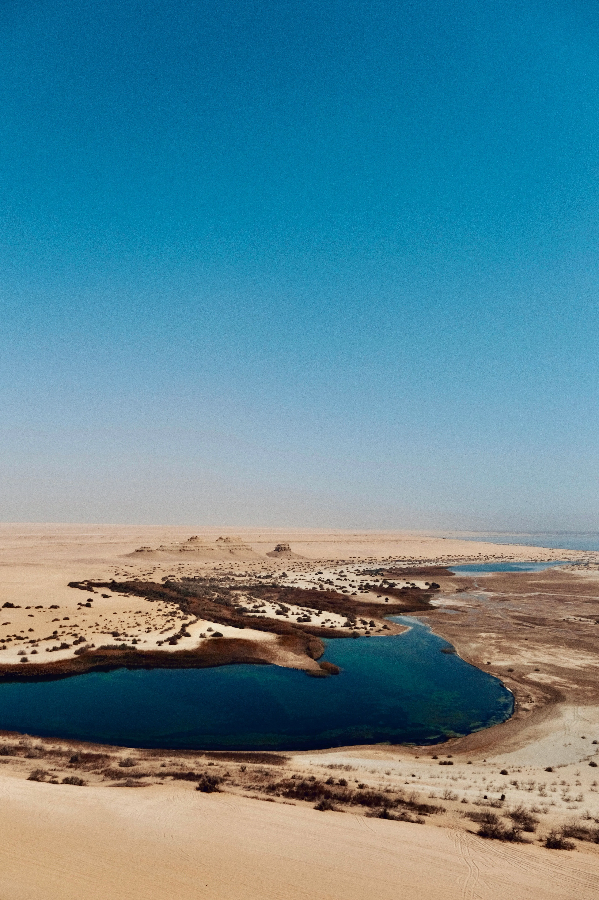
MultiSalty Joy Dakhla
La glisse sans pression, pour toutes et tous.Riding without pressure, for everyone.La deslizamiento sin presión, para todas y todos.Deslizar sem pressão, para todas e todos.Scivolata senza pressione, per tutte e tutti.
📍 Dakhla centre📍 Dakhla centre📍 Centro de Dakhla📍 Centro de Dakhla📍 Centro di Dakhla
Club mixte, ambiance inclusive. Idéal pour les voyageuses solos ou groupes d'amies.Mixed club, inclusive vibe. Ideal for solo female travellers or groups of friends.Club mixto, ambiente inclusivo. Ideal para viajeras solas o grupos de amigas.Clube misto, ambiente inclusivo. Ideal para viajantes solo femininas ou grupos de amigas.Club misto, ambiente inclusivo. Ideale per viaggiatrici in solitaria o gruppi di amiche.

Westpoint Pescador
La table suspendue entre vague et coucher de soleil.The table suspended between wave and sunset.La mesa suspendida entre ola y puesta de sol.A mesa suspensa entre onda e pôr do sol.Il tavolo sospeso tra onda e tramonto.
La meilleure table de Foum El Bouir. Fruits de mer ultra-frais, coucher de soleil face au point break.The finest table in Foum El Bouir. Ultra-fresh seafood, sunset facing the point break.La mejor mesa de Foum El Bouir. Mariscos ultrafrescos, atardecer frente al point break.A melhor mesa de Foum El Bouir. Marisco ultrafesco, pôr do sol face ao point break.La tavola più raffinata di Foum El Bouir. Frutti di mare freschissimi, tramonto sul point break.
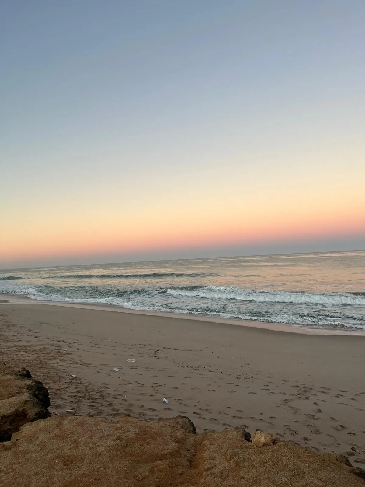
Bavaro Beach Dakhla
Les pieds dans le sable, l'horizon plein les yeux.Feet in the sand, eyes full of horizon.Los pies en la arena, los ojos llenos de horizonte.Os pés na areia, os olhos cheios de horizonte.I piedi nella sabbia, gli occhi pieni d'orizzonte.
Havre de paix en bord de plage. Poisson frais, terrasse lumière du soir.A peaceful haven by the shore. Fresh fish, terrace in the evening light.Refugio de paz a orillas de la playa. Pescado fresco, terraza en la luz del atardecer.Um refúgio de paz à beira da praia. Peixe fresco, esplanada com luz do entardecer.Un rifugio di pace in riva alla spiaggia. Pesce fresco, terrazza nella luce della sera.
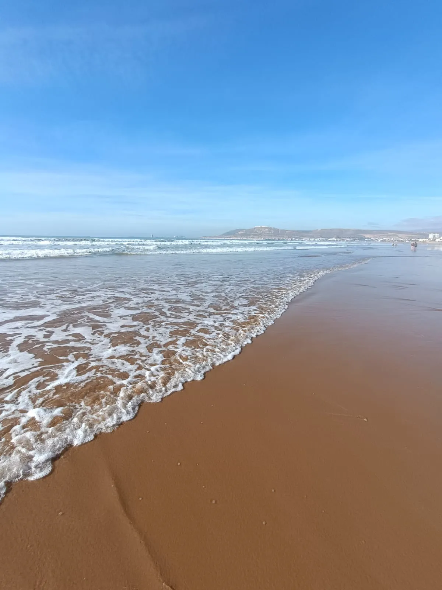
Casa Luis
L'authenticité marocaine à prix doux, sans chichi.Moroccan authenticity at an honest price, no fuss.Autenticidad marroquí a precio justo, sin pretensiones.Autenticidade marroquina a preço honesto, sem complicações.Autenticità marocchina a prezzo onesto, senza fronzoli.
L'adresse locale par excellence. Menus dès 80 MAD, recettes traditionnelles.The local address par excellence. Set menus from 80 MAD, traditional recipes.La dirección local por excelencia. Menús desde 80 MAD, recetas tradicionales.O endereço local por excelência. Menus a partir de 80 MAD, receitas tradicionais.L'indirizzo locale per eccellenza. Menu da 80 MAD, ricette tradizionali.

Beach Bar · Dakhla Attitude
Le mojito rituel d'après session, face à la lagune.The ritual post-session mojito, facing the lagoon.El mojito ritual post-sesión, frente a la laguna.O mojito ritual pós-sessão, de frente para a lagoa.Il mojito rituale post-sessione, di fronte alla laguna.
Mojitos après session, DJ sunset deux fois par semaine. L'énergie surf-nomade.Post-session mojitos, DJ sunset twice a week. The surf-nomad energy.Mojitos post-sesión, DJ sunset dos veces por semana. La energía surf-nómada.Mojitos pós-sessão, DJ sunset duas vezes por semana. A energia surf-nómada.Mojito dopo la sessione, DJ sunset due volte a settimana. L'energia surf-nomade.
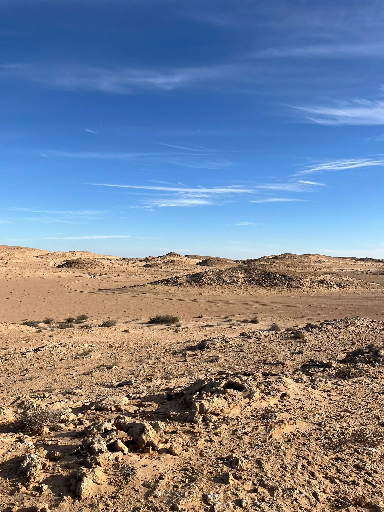
Palais Rhoul · Table du Pêcheur
Du filet à l'assiette — la poésie des grandes tables.From net to plate — the poetry of great tables.De la red al plato — la poesía de las grandes mesas.Da rede ao prato — a poesia das grandes mesas.Dalla rete al piatto — la poesia delle grandi tavole.
Poisson de leur propre bateau, charbon de bois, recettes raffinées. La grande table de Dakhla.Fish from their own boat, wood charcoal, refined recipes. The great table of Dakhla.Pescado de su propio barco, carbón de madera, recetas refinadas. La gran mesa de Dakhla.Peixe do próprio barco, carvão de madeira, receitas refinadas. A grande mesa de Dakhla.Pesce dalla propria barca, carbone di legna, ricette raffinate. La grande tavola di Dakhla.
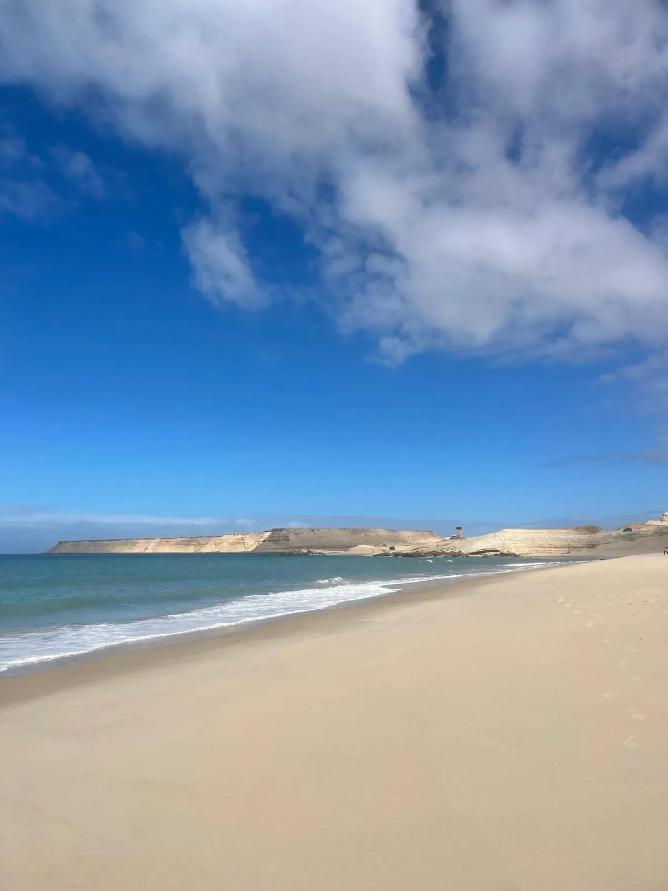
Parc à Huîtres de Dakhla
Dakhla dans une écaille — l'iode et l'Atlantique.Dakhla in a shell — iodine and the Atlantic.Dakhla en una concha — el yodo y el Atlántico.Dakhla numa concha — iodo e o Atlântico.Dakhla in un guscio — iodio e Atlantico.
Huîtres remarquables élevées dans les eaux froides de la lagune. À faire à chaque visite.Remarkable oysters grown in the lagoon's cool waters. A must on every visit.Ostras notables criadas en las aguas frías de la laguna. Imprescindible en cada visita.Ostras notáveis criadas nas águas frias da lagoa. A fazer em cada visita.Ostriche straordinarie allevate nelle acque fredde della laguna. Da fare ad ogni visita.